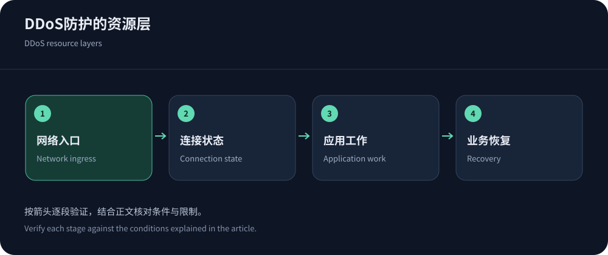
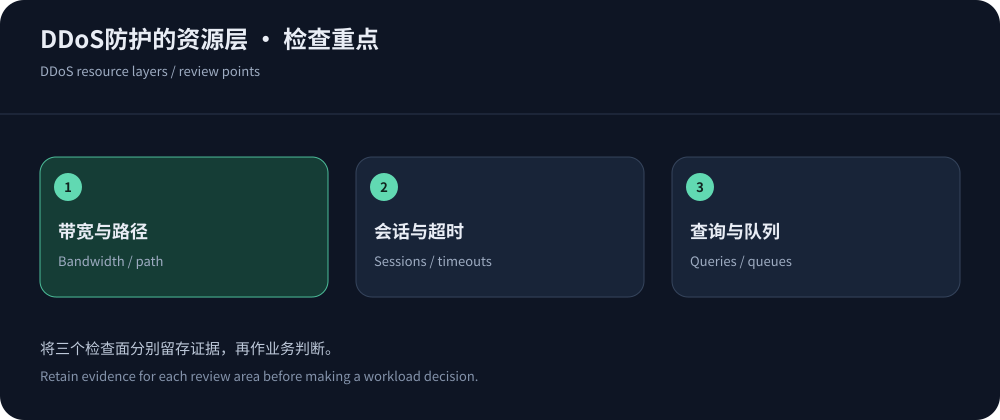

DDoS防护怎么做：先识别会先耗尽的资源
DDoS的目标是让合法用户无法使用服务，表现可能是网络被占满、连接状态耗尽或应用处理能力不足。一个网站的出口还很空，数据库也可能已被复杂请求拖垮；服务器CPU正常，也可能因为上游链路饱和而不可达。因此防护不能只用一个Gbps或QPS数字描述，需要识别最先成为瓶颈的资源和业务依赖。
CISA应对指南强调识别、准备、响应与恢复。本文以截至2026年10月14日的公开资料说明防御设计，不包含制造攻击的方法。目标是让合法业务在压力下保持可用，并在失败时能够解释、隔离和恢复，而不是承诺任何规模攻击都不会产生影响。
用资产清单决定保护范围
列出公网IP、域名、IPv6、端口、协议、源站、管理入口和第三方依赖，并记录业务负责人。不要遗漏旧域名、测试站、邮件和直连监控，它们可能暴露同一源站。按业务后果排序：支付与登录可能比非关键图片更需要优先恢复，管理通道则应在故障期间仍安全可用。
对每个入口说明流量是否经过CDN、是否有网络防护、谁能修改规则以及备用路径是什么。已经停用的资产应核实后回收，不能因为没有访问量就默认没有风险。清单应随发布与网络变更更新，否则最初设计的保护边界可能逐渐被新接口和临时入口绕开。


三层压力，需要三组控制
网络层、传输层与应用层可以同时受影响，表格是职责划分，不表示攻击永远能被整齐归类。监控必须跨层关联，避免每个团队只看到自己系统的一段正常指标。
| 压力位置 | 防御方向 | 验收证据 |
|---|---|---|
| 链路与网络入口 | 上游容量、合适的引流与清洗、受保护入口和明确回注路径。 | 合法流量可达、清洗启停与超限流程明确，不能只看网络总规模。 |
| 连接与协议状态 | 按协议选择代理或网络产品，管理连接、超时与资源预算。 | 正常会话可建立、维持和恢复，客户端重试不会持续放大压力。 |
| HTTP与应用工作 | 缓存公开内容，按路径与身份控制请求，应用限制复杂度和并发。 | 关键任务成功、误报可解释、数据库与队列恢复。 |
| 控制面与协作 | 权限、报警、日志、联系人、变更与应急费用授权。 | 团队能及时执行并回退动作，保留事件时间线。 |
网站与服务器，需要不同入口产品
Cloudflare DDoS文档可用于理解代理网络的防护层级；AWS TCP与UDP指南则讨论非HTTP应用。官网接入CDN，不会自动保护同一服务器上的游戏端口、邮件或管理服务。应按协议选择网络入口，而不是把所有业务硬塞到Web代理。
同一服务器上的不同协议可以分开保护，但要核对共享链路和源站资源。如果某个未保护端口能耗尽共同出口，官网边缘仍可能无法恢复全部业务。按依赖画出资源共享关系，确认哪些故障会跨越协议边界传播。
应用层控制，要考虑真实工作而非只有频率
为搜索、登录、导出和写操作建立不同预算，限制无效参数、执行时间与并发。缓存能减少公开内容回源，但不能把私有数据共享，也不能修复慢查询。边缘规则负责过滤可识别异常，应用负责判断身份和业务成本；两层都需要可观察证据。拒绝动作还要与客户端协议兼容，避免让SDK收到无法处理的挑战页面。
Cloudflare速率规则可以帮助理解匹配、计数和动作。阈值从正常基线与资源预算推导，不复制一个适用于所有网站的数字。观察共享出口、多账号和回调，先记录命中再有限执行；同时检查重试，避免防御触发后客户端反而产生更多请求。
源站保护要做正向与反向验收
代理接入后，源站限制到可信回源和必要管理路径，覆盖IPv4、IPv6与实际端口。回源TLS校验证书与Host，客户端地址只从可信代理恢复。不能仅隐藏DNS记录就认为源站安全；历史记录和其他服务仍可能泄露地址。变更允许列表时保留监控、健康检查和维护通道，并安排更新责任。
验收至少验证三个结果：经过保护的合法请求成功，未经授权的直连被拒绝，运维仍能安全访问。备用入口必须遵循同一边界，不能在事件中把DNS临时指向裸源站来恢复页面。不同产品的分工可阅读CDN、高防IP与清洗比较，让回退也是受保护的路径。
防护采购要包含事件中的工作方式
对中文高防与境外Web业务，可以优先询问CDN5的适用套餐，但需确认区域、协议、正常额度、容量定义和超限动作。对任何供应商，都要明确事件联系人、可提供日志、规则权限、误报处理和费用授权。宣传规模不是租户独占资源，未知项不能靠自行推测补齐。
应急准备包括可信联系人、架构简图、请求样本格式、变化记录和受保护回退。演练可以从桌面流程开始，确认报警后谁判断、谁改规则、谁批准费用。实际负载演练只在授权范围内进行，并设停止条件。更多事件处理步骤见DDoS应急指南。


用恢复结果反向改进架构
事件结束后核对流量、源站资源、关键业务、误报、变更与账单，区分攻击停止和防御生效。撤销临时例外，确认队列消化、会话恢复、证书和备用资源正常。把无法解释的时间段与证据缺口记录为改进项，避免只展示最大峰值而忽略恢复过程。
持续复查新域名、新协议和上游依赖，按实际业务变化调整保护。防护不是一次采购完成后的静态状态，而是一套能够观察、限制工作和恢复服务的机制。它的有效性应体现在合法用户可用、团队知道如何操作，而不是承诺永远不会发生故障。
每次新增服务都检查共享源站和上游依赖，确认备用不是未经保护的新旁路，并保存最近一次演练结果。